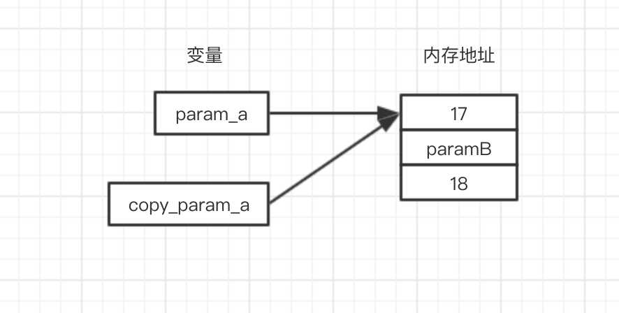
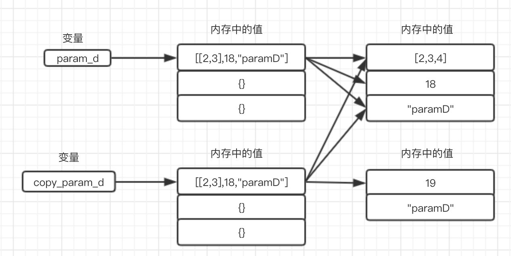
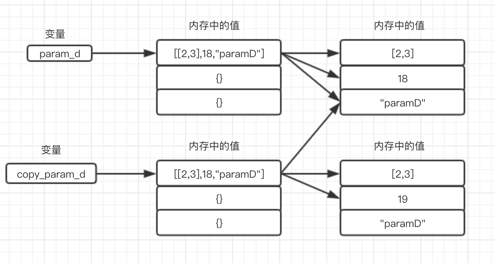

内存的浅拷贝和深拷贝是面试时经常被问到的问题，如果不能理解其本质原理，有可能会答非所问，给面试官留下不好的印象。另外，理解浅拷贝和深拷贝的原理，还可以帮助我们理解Python内存机制。这篇文章将会通过一些例子，来验证内存拷贝的过程，帮助大家理解内存拷贝的原理。
我们首先得知道Python3中的数据被分为可变类型和不可变类型
对于可变类型和不可变类型，它们在浅拷贝和深拷贝中的表现是不一样的，下面我们就通过具体的例子来引出对应的结论。
我们先来贴一个例子，然后大家可以先思考下结果会是怎样的。
def shadow_copy_test():
"""
对浅copy进行验证
:return:
"""
# 不可变数据类型
param_a = 17
param_b = "paramB"
param_c = (18, "paramC")
copy_param_a = copy.copy(param_a)
copy_param_b = copy.copy(param_b)
copy_param_c = copy.copy(param_c)
print("验证不可变数据类型")
print(id(param_a))
print(id(copy_param_a))
print(id(param_b))
print(id(copy_param_b))
print(id(param_c))
print(id(copy_param_c))
print("======================")
# 可变数据类型
param_d = [[2, 3], 18, "paramD"]
param_e = {"key1": 18, "key2": "paramE", "key3": [1, 2]}
param_f = {18, "paramF"}
copy_param_d = copy.copy(param_d)
copy_param_e = copy.copy(param_e)
copy_param_f = copy.copy(param_f)
print("验证可变数据类型")
print(id(param_d))
print(id(copy_param_d))
print(id(param_e))
print(id(copy_param_e))
print(id(param_f))
print(id(copy_param_f))
# 运行结果
验证不可变数据类型
4455468864
4455468864
4457955120
4457955120
4457945040
4457945040
======================
验证可变数据类型
4458366368
4458367168
4457911312
4457911552
4457982144
4458284768
由此我们可以看出，对于不可变类型，浅拷贝并不会更改内存地址，而对于可变数据类型，会产生一个新的内存地址。接下来我们再来看看对于可变数据类型，去修改其中的元素会怎么样：
print("验证列表中元素")
# 验证列表中第一个元素是否相等
print(id(param_d[1]))
print(id(copy_param_d[1]))
print(id(param_d[0]))
print(id(copy_param_d[0]))
print("======================")
# 更改列表中元素的值
print("验证修改可变数据类型元素的值")
param_d[0].append(4)
print(param_d)
print(copy_param_d)
param_d.append("abc")
print(param_d)
print(copy_param_d)
param_d[1] = 19
print(param_d)
print(copy_param_d)
# 运行结果
验证列表中元素
4534525792
4534525792
4537357968
4537357968
验证修改可变数据类型元素的值
[[2, 3, 4], 18, 'paramD']
[[2, 3, 4], 18, 'paramD']
[[2, 3, 4], 18, 'paramD', 'abc']
[[2, 3, 4], 18, 'paramD']
[[2, 3, 4], 19, 'paramD', 'abc']
[[2, 3, 4], 18, 'paramD']
我们从上面结果可以看出，对于可变数据结构，他们元素的内存地址没有变化（以List为例，相当于新生成一个List，然后将原来List中元素的值全部copy到新生成的List中），而修改其中的可变数据类型(比如：param_d[0])，copy对象也会同步修改(copy_param_d[0])；而修改不可变元素(比如：param_d[1])，并不会影响其copy对象(copy_param_d[1])。
综上我们可以得出如下结论（敲黑板，划重点）：
为了方便大家理解，画了内存地址的简图：
首先是不可变数据类型，因为其值的内存地址是不可变的，所以在内存中只有这一份：

其次是可变数据类型：

同样的，我们还是先来看例子(代码基本和上面的保持一致，只是修改了深拷贝方法deepcopy)：
def deep_copy_test():
"""
对深拷贝进行验证
:return:
"""
"""
对浅copy进行验证
:return:
"""
# 不可变数据类型
param_a = 17
param_b = "paramB"
param_c = (18, "paramC")
copy_param_a = copy.deepcopy(param_a)
copy_param_b = copy.deepcopy(param_b)
copy_param_c = copy.deepcopy(param_c)
print("验证不可变数据类型")
print(id(param_a))
print(id(copy_param_a))
print(id(param_b))
print(id(copy_param_b))
print(id(param_c))
print(id(copy_param_c))
print("======================")
# 可变数据类型
param_d = [[2, 3], 18, "paramD"]
param_e = {"key1": 18, "key2": "paramE", "key3": [1, 2]}
param_f = {18, "paramF"}
copy_param_d = copy.deepcopy(param_d)
copy_param_e = copy.deepcopy(param_e)
copy_param_f = copy.deepcopy(param_f)
print("验证可变数据类型")
print(id(param_d))
print(id(copy_param_d))
print(id(param_e))
print(id(copy_param_e))
print(id(param_f))
print(id(copy_param_f))
print("======================")
print("验证列表中元素")
# 验证列表中第一个元素是否相等
print(id(param_d[1]))
print(id(copy_param_d[1]))
print(id(param_d[0]))
print(id(copy_param_d[0]))
print("======================")
# 更改列表中元素的值
print("验证修改可变数据类型元素的值")
param_d[0].append(4)
print(param_d)
print(copy_param_d)
param_d.append("abc")
print(param_d)
print(copy_param_d)
param_d[1] = 19
print(param_d)
print(copy_param_d)
# 打印结果如下：
验证不可变数据类型
4438175552
4438175552
4440636208
4440636208
4440885840
4440885840
======================
验证可变数据类型
4440987760
4441335360
4440593344
4440594224
4440966160
4440967840
======================
======================
验证列表中元素
4438175584
4438175584
4440628192
4441336000
验证修改可变数据类型元素的值
[[2, 3, 4], 18, 'paramD']
[[2, 3], 18, 'paramD']
[[2, 3, 4], 18, 'paramD', 'abc']
[[2, 3], 18, 'paramD']
[[2, 3, 4], 19, 'paramD', 'abc']
[[2, 3], 18, 'paramD']我们可以和浅拷贝的运行结果做个对比，其中有差别的地方是：浅拷贝时列表中元素的内存地址没变，而深拷贝时列表中元素的内存地址发生了变化(主要针对可变数据类型，比如：param_d[0]和copy_param_d[0])。另外，对于可变数据类型，修改原始数据中的值，并不会影响拷贝数据。
综上，我们得出如下结论(敲黑板，划重点)：
为了大家理解，同样画了一幅内存简图(主要是针对可变数据类型)，可以对比下和浅拷贝时内存简图的区别：

本文主要介绍了在Python3中内存的深拷贝和浅拷贝机制，大家可以动手写一下文中贴的Python代码，这样更能加深你的理解。总结来说，对于Python的不可变数据类型，深拷贝和浅拷贝的差别不大；主要区别是Python中的可变数据类型，深拷贝会对列表中的子元素进行递归拷贝处理，而浅拷贝则不会。